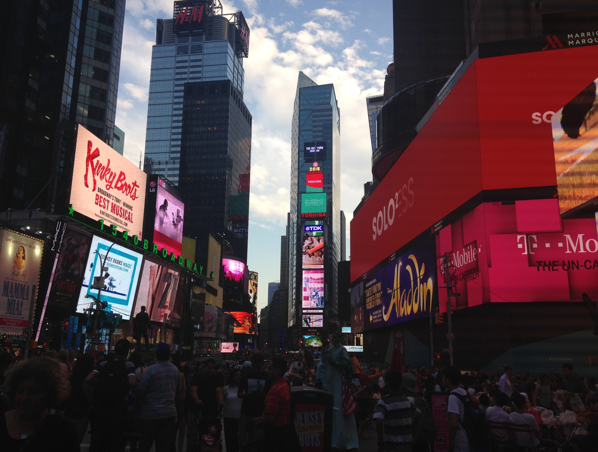

Theatre
Theatre

New York, July 21, 2015
First show
Wicked
Recent show
Come From Away
Favorite show
Kinky Boots
Want to see
Hamilton
Overview
Theatre has played a pretty big part in Giovanna’s life since she began high school. Once she entered into the Drama Club, Giovanna became much more interested in the performing arts. While she didn’t enjoy acting or singing herself, she did enjoy watching others do so on stage. Being in the Publicity Crew in Drama Club gave her the perfect opportunity to appreciate theatre and contribute to in the best way she knew how – graphic design.
During high school, Giovanna began to go to New York, usually during Spring Break, to visit her Zia Julie who lives in Connecticut. Her Zia loves theatre just like Giovanna does, so they both go see Broadway shows every year when Giovanna goes to visit. They’ve seen a wide range of shows, from jukebox musicals to six-hour plays.
Now that she’s at CSU in Fort Collins, Giovanna also frequently sees shows at the University Center of the Performing Arts, as well as the Lincoln Center which is also located in Fort Collins. She also sees shows at the Buell Theatre in Denver whenever she can when she is living in Centennial during the summers.
During high school, Giovanna began to go to New York, usually during Spring Break, to visit her Zia Julie who lives in Connecticut. Her Zia loves theatre just like Giovanna does, so they both go see Broadway shows every year when Giovanna goes to visit. They’ve seen a wide range of shows, from jukebox musicals to six-hour plays.
Now that she’s at CSU in Fort Collins, Giovanna also frequently sees shows at the University Center of the Performing Arts, as well as the Lincoln Center which is also located in Fort Collins. She also sees shows at the Buell Theatre in Denver whenever she can when she is living in Centennial during the summers.
◦ Giovanna designed the Bye Bye Birdie poster for her Junior year musical in high school.
◦ Giovanna and her Zia Julie have seen six shows on Broadway.
◦ Giovanna and her parents also frequently go see Shakespeare in the Park at CU Boulder during the summers.
◦ Giovanna and her Zia Julie have seen six shows on Broadway.
◦ Giovanna and her parents also frequently go see Shakespeare in the Park at CU Boulder during the summers.